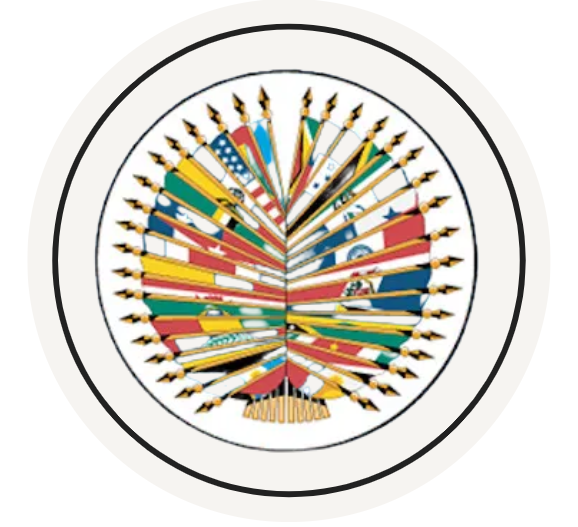
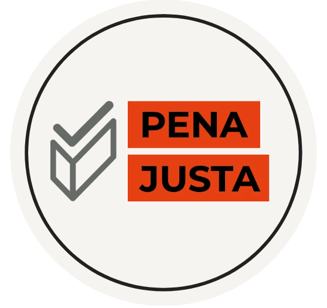
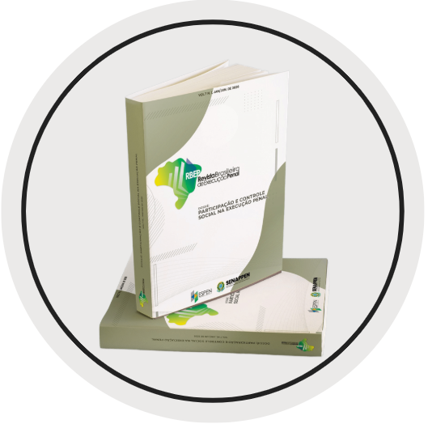

Prévia local para orientação da DCOM. Implementar no gov.br/Senappen com os componentes oficiais já disponíveis no Plone.
Ouvidoria
Ouvidoria Nacional de Serviços Penais
Canal oficial da Senappen para escuta, transparência, participação social e encaminhamento de manifestações relacionadas aos serviços penais.
A Ouvidoria Nacional de Serviços Penais (Onasp), vinculada à Secretaria Nacional de Políticas Penais (Senappen) e integrante do Sistema de Ouvidorias do Poder Executivo Federal, promove a participação social e a defesa dos direitos dos servidores, das pessoas em cumprimento de pena, dos egressos e de seus familiares. Atua no recebimento, tratamento e encaminhamento de manifestações, por meio do canal Fala.BR (elogios, sugestões, solicitações, reclamações e denúncias), visando o fortalecimento do controle social, a melhoria contínua dos serviços penais e o monitoramento dos estabelecimentos prisionais do país.
A Ouvidoria também é responsável pelo Serviço de Informações ao Cidadão (SIC). Por meio da Lei de Acesso à Informação (LAI), você pode solicitar dados e documentos de acesso público através da plataforma Fala.BR. Sua demanda será analisada pela nossa equipe e encaminhada ao setor responsável para que você receba a resposta adequada. Conheça o fluxo de tratamento das denúncias.
Tipos de Manifestação
A Ouvidoria Nacional de Serviços Penais (Onasp/Senappen) é o canal oficial para o registro de manifestações relacionadas aos serviços públicos prestados no âmbito do sistema penal federal e estadual. Por meio das categorias abaixo, todo cidadão pode encaminhar elogios, sugestões, solicitações, reclamações, denúncias, comunicações ou propostas de simplificação, contribuindo para a transparência, o controle social e a melhoria dos serviços públicos.

Canais de Atendimento

Mapa de Localização

Conteúdo Técnico e Projetos Estruturantes

EMA - Senappen Espaço da Equipe de Monitoramento e Acompanhamento das decisões e deliberações do Sistema Interamericano de Direitos Humanos em face do sistema penal nacional, dedicado a fortalecer o cumprimento das determinações do SIDH em parceria com as Unidades Federativas.
Plano Pena Justa Ambiente dedicado integralmente ao Plano, que disponibiliza o acesso a cronogramas, documentos técnicos e relatórios de acompanhamento.
Revista Brasileira de Execução Penal Em articulação com a Espen e a DCOM, a Onasp reúne referências da Revista Brasileira de Execução Penal, com acesso a dossiês, notícias editoriais e conteúdos relacionados à participação social, transparência e direitos no sistema penal.Plano de Metas 2026
Alinhada às diretrizes de modernização da Secretaria Nacional de Políticas Penais, a Onasp apresenta seu Plano de Metas para o ciclo 2026. Este planejamento estratégico estrutura-se em eixos fundamentais: inovação tecnológica no atendimento, fortalecimento da governança federativa e educação continuada em cidadania. As ações listadas abaixo representam o compromisso público da Ouvidoria com a eficiência da gestão e a garantia de direitos no sistema penal.

Relatórios de Gestão
O Relatório de Gestão é o principal instrumento de transparência pública e prestação de contas da Onasp à sociedade.
Este documento consolida, anualmente, as ações estratégicas voltadas ao aprimoramento do controle social, à melhoria das condições estruturais das ouvidorias estaduais e ao aumento da fiscalização sobre denúncias e solicitações.
Ao disponibilizar esses dados, permitimos que cidadãos, pesquisadores e órgãos de controle acompanhem a evolução das políticas penais e os avanços efetivos na defesa de direitos dentro do sistema prisional.
Painel de Tratamento de Demandas da Ouvidoria Nacional dos Serviços Penais
O Painel de Tratamento de Demandas da Ouvidoria Nacional de Serviços Penais (Onasp) é uma ferramenta de transparência ativa e gestão estratégica. Por meio de tecnologia de Business Intelligence (BI), o painel permite ao cidadão pesquisar e visualizar estatísticas atualizadas sobre as manifestações recebidas (denúncias, reclamações, solicitações, sugestões e elogios), monitorando os indicadores de desempenho e os temas mais recorrentes no sistema penal. A base de dados contempla registros a partir de janeiro de 2023, sendo atualizada periodicamente para garantir o controle social efetivo.